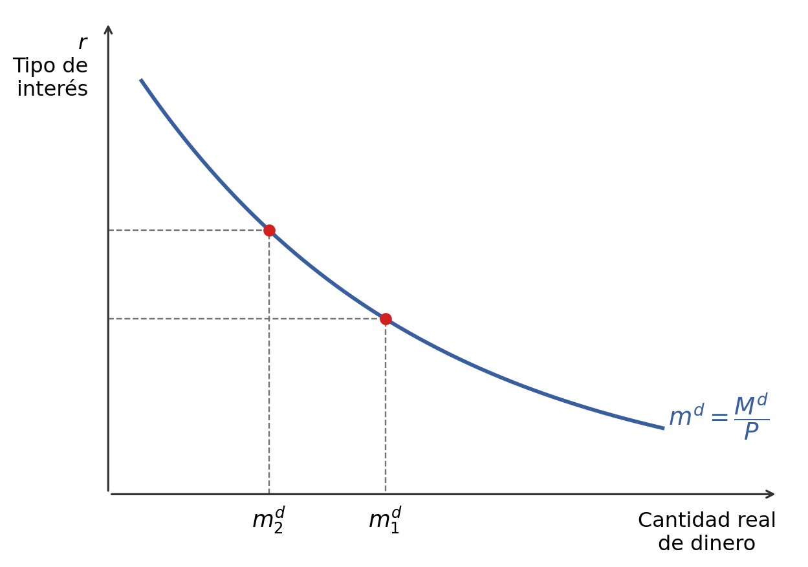
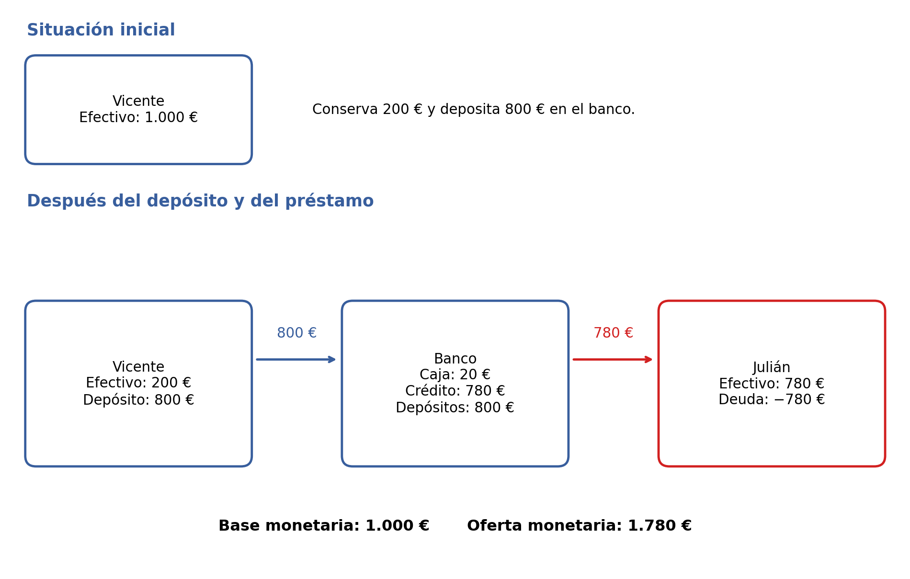

9 Sistema monetario
Este capítulo estudia el dinero, los bancos y la política monetaria. Primero se presentan las funciones del dinero y sus tipos a lo largo de la historia. Después se analiza la demanda de dinero y su relación con el tipo de interés, la creación del dinero legal y del dinero bancario, las magnitudes monetarias, la relación entre efectivo y depósitos, el coeficiente de caja y el multiplicador monetario. Por último, se abordan los instrumentos y objetivos de la política monetaria.
9.1 ¿Qué es el dinero?
El dinero es cualquier bien que cumple tres funciones:
- Medio de cambio. Al ser de aceptación generalizada, sirve para realizar transacciones y evita la necesidad de recurrir al trueque.
- Unidad de cuenta. El precio de cualquier bien se mide como la relación a la cual ese bien se intercambia por dinero.
- Depósito de valor. Se puede conservar el dinero, en lugar de intercambiarlo por otros bienes hoy, para intercambiarlo en el futuro.
Es necesario distinguir el dinero de la riqueza y de la renta. Una persona puede ser muy rica si posee, por ejemplo, tierras o acciones, y sin embargo, al mismo tiempo, tener poco dinero. El dinero es solo una de las diversas maneras en que puede acumularse riqueza.
También es necesario distinguir entre el dinero y la renta. Esta última no se obtiene necesariamente en dinero; también puede obtenerse en especie.
9.2 Tipos de dinero a lo largo de la historia
El dinero aparece para evitar las desventajas del trueque. Para ello, se acuerda aceptar un bien a cambio de todos los demás.
En la historia del dinero, pueden distinguirse dos etapas: la etapa del dinero mercancía y la del dinero fiduciario.
El dinero mercancía tiene un valor intrínseco que coincide con el valor que representa. A lo largo de la historia se han utilizado como dinero la sal, el tabaco, la plata y el oro, entre otros bienes. Estos pueden cumplir las tres funciones del dinero —medio de pago, unidad de cuenta y depósito de valor— gracias a ciertas características:
- Son relativamente escasos, lo que permite mantener su valor.
- No son perecederos, lo que permite utilizarlos como depósito de valor.
- Son divisibles, lo que facilita el intercambio.
Posteriormente, se comenzó a mantener el oro guardado o depositado en alguna institución, y los intercambios se realizaban mediante un papel canjeable por oro. Así surgen los bancos.
En esta evolución apareció el dinero fiduciario. Al principio, el papel era una promesa de pago en oro; actualmente, ya no está respaldado por oro. Su uso y aceptación se apoyan en la obligación legal de aceptarlo y en la confianza en que otras personas también lo aceptarán. (El adjetivo «fiduciario» proviene del latín fiducia, que significa «confianza».)
Hoy en día, la cantidad total de dinero está formada por el dinero legal, constituido por monedas y billetes, y el dinero bancario, constituido por cuentas o depósitos.
9.3 Demanda de dinero
9.3.1 Concepto
Las personas deben decidir cómo asignan su riqueza entre diferentes activos. Esta decisión se denomina selección de cartera. La demanda de dinero es la cantidad de riqueza que los individuos desean mantener en forma de dinero.
Consideremos un ejemplo numérico. Pedro tiene una riqueza de 50.000 €. Desea mantener 40.000 € en forma de bonos y 10.000 € en forma de dinero. Su demanda de dinero es, por tanto, de 10.000 €. Su amigo Ricardo tiene una riqueza de 15.000 €. No se fía de nadie y la ha guardado toda en billetes escondidos en su casa. Su demanda de dinero es, por tanto, de 15.000 €. La demanda de dinero de Pedro y Ricardo juntos es la suma de las demandas de dinero individuales; esto es, de 25.000 €.
9.3.2 Motivos
Si el dinero no proporciona rentabilidad, ¿por qué motivos las personas mantienen una parte de su riqueza en dinero?
- Motivo de transacción (medio de cambio): se mantiene dinero para comprar bienes y servicios. Lo que importa es lo que se puede comprar con él, es decir, su valor real, y no su valor nominal. Si sube el nivel general de precios (\(P\)), la demanda nominal de dinero (\(M^d\)) subirá en la misma proporción. Por tanto, la demanda real de dinero (\(m^d\)) es:
\[ m^d = \frac{\text{Demanda nominal de dinero}}{\text{Nivel general de precios}} = \frac{M^d}{P}. \]
- Motivo especulativo (depósito de valor): las personas desean obtener rentabilidad, pero también asegurarse contra las pérdidas. Mantener dinero supone una menor rentabilidad, pero también un menor riesgo.
9.3.3 Demanda de dinero y tipo de interés
El coste de oportunidad de mantener riqueza en dinero es el tipo de interés que se deja de ganar.
Para simplificar, supongamos que la riqueza solo puede asignarse a dinero y a bonos. El dinero no proporciona interés, mientras que los bonos proporcionan un interés \(r\). En ese caso, la riqueza real es la suma de la demanda real de dinero (\(m^d\)) y la demanda real de bonos (\(b^d\)):
\[ \text{Riqueza real} = m^d + b^d. \]
Si sube el tipo de interés, ¿qué ocurre con la cantidad demandada de dinero? La curva de demanda de dinero es decreciente con respecto al tipo de interés. Como muestra la Figura 9.1, un tipo de interés más alto se corresponde con una menor cantidad real demandada de dinero.
9.4 Creación del dinero legal: base monetaria
¿Cómo se crea el dinero y cuánto circula? El dinero legal está formado por monedas y billetes. Para comprender su creación, consideremos primero un sistema de billetes canjeables por oro.
Ejemplo: balance de un banco central en un sistema de billetes canjeables por oro. El banco central tiene un activo de 1.000 millones de oro y emite 1.000 millones en billetes, como se recoge en la Tabla 9.1. Los billetes son un pasivo para el banco central, porque suponen una deuda con los particulares, y un activo para los particulares.
| Activo | Pasivo (\(BM\)) |
|---|---|
| Oro = 1.000 | Billetes = 1.000 |
El valor total de estos pasivos monetarios del banco cdentral, es decir, de los billetes emitidos, se denomina base monetaria (\(BM\)).
Si el banco central quiere aumentar la base monetaria en, por ejemplo, 100 millones, tendrá que comprar oro por ese valor y financiar la compra mediante la emisión de billetes por 100 millones. La Tabla 9.2 muestra esta operación.
| Activo | Pasivo (\(BM\)) |
|---|---|
| Oro = 1.000 + 100 | Billetes = 1.000 + 100 |
Consideremos ahora un sistema en el que los billetes están respaldados por varios tipos de activos. La Tabla 9.3 presenta un ejemplo de balance del banco central. Las partidas del activo son las fuentes de creación de base monetaria.
| Activo | Pasivo (\(BM\)) |
|---|---|
| Oro = 1.100 | Billetes = 10.600 |
| Préstamo neto al sistema bancario = 4.500 | |
| Títulos financieros = 3.500 | |
| Divisas = 1.500 |
Si el banco central adquiere nuevos activos, a cambio emite dinero para pagarlos y la base monetaria aumenta. Si el banco central se desprende de activos, recoge dinero que había emitido anteriormente y la base monetaria disminuye.
9.5 Dinero bancario y magnitudes monetarias
Los bancos son empresas que aceptan depósitos o cuentas y conceden créditos. Un depósito tiene una doble consideración: para el banco, es un pasivo; para el individuo, es un activo.
Los depósitos a la vista o cuentas corrientes son considerados dinero porque permiten realizar pagos mediante tarjetas, transferencias bancarias y otras anotaciones contables. Este dinero se denomina dinero bancario.
9.5.1 Un ejemplo de creación de dinero bancario
Inicialmente, Vicente tiene 1.000 € en efectivo. Este dinero forma parte del efectivo en manos de particulares correspondiente a Vicente (\(EMP_V\)):
\[ EMP_V = 1.000\;\text{€}. \]
Vicente conserva 200 € en efectivo y deposita 800 € en el banco. Por tanto:
\[ EMP_V = 200\;\text{€}, \qquad D = 800\;\text{€}. \]
Cuando los bancos reciben depósitos, guardan una parte como activos de caja (\(AC\)), o reservas líquidas, y prestan el resto. Supongamos que, de los 800 € que Vicente ha depositado, el banco conserva 20 € como activos de caja y concede un crédito (\(C\)) de 780 € a Julián:
\[ AC = 20\;\text{€}, \qquad C = 780\;\text{€}. \]
Julián recibe 780 € en efectivo (\(EMP_J\)) y contrae una deuda de la misma cuantía. Así, tiene 780 € de efectivo y una posición deudora de \(-780\) € por el crédito recibido. La Figura 9.2 resume las etapas del ejemplo.

La base monetaria es la suma del efectivo en manos de Vicente, el efectivo en manos de Julián y los activos de caja del banco:
\[ BM = EMP_V + EMP_J + AC = 200 + 780 + 20 = 1.000\;\text{€}. \]
La oferta monetaria, o dinero en circulación, suma el efectivo en manos de ambos particulares y los depósitos:
\[ OM = EMP_V + EMP_J + D = 200 + 780 + 800 = 1.780\;\text{€}. \]
9.5.2 Base monetaria y oferta monetaria
Cuando un banco recibe un depósito, guarda una parte como activos de caja (\(AC\)), o reservas líquidas, y presta lo que queda. El resto del dinero legal, formado por monedas y billetes, es efectivo en manos de los particulares (\(EMP\)).
La base monetaria, que controla el banco central, está formada por los activos de caja y el efectivo en manos de particulares:
\[ BM = AC + EMP. \]
[La oferta monetaria, que representa la cantidad de dinero en circulación, está formada por los depósitos y el efectivo en manos de particulares:
\[ OM = D + EMP. \]]{#oferta-monetaria}
9.6 La relación entre efectivo y depósitos
Los individuos deciden mantener una parte de su dinero en forma de monedas y billetes (\(EMP\)) y otra parte en depósitos bancarios (\(D\)).
El cociente entre el efectivo y los depósitos que poseen las personas se denomina relación efectivo/depósitos, que denotaremos con \(e\):
\[ e = \frac{EMP}{D} = \frac{\text{Efectivo en manos de particulares}}{\text{Depósitos}}. \]
Por ejemplo, si Vicente mantiene 200 € en billetes y 800 € en depósitos, entonces su relación efectivo/depósitos es:
\[ e_V = \frac{EMP_V}{D_V} = \frac{200}{800} = 0{,}25. \]
De la definición de la relación efectivo/depósitos se puede despejar el efectivo en manos de particulares:
\[ EMP = e \cdot D. \]
9.7 El coeficiente de caja
Los bancos intermedian canalizando el ahorro. Para ello, captan depósitos que remuneran a un tipo de interés, mediante operaciones de pasivo, y conceden créditos por los que cobran un tipo de interés, mediante operaciones de activo.
Con los depósitos captados, los bancos mantienen una parte en forma de activos de caja (\(AC\)), que son muy líquidos, pero tienen una baja rentabilidad. Con el resto conceden créditos (\(C\)), que son poco líquidos, pero más rentables.
A la hora de decidir cuánto mantienen como activos de caja y cuánto destinan a créditos, los bancos tienen en cuenta dos objetivos:
- Rentabilidad para sus accionistas, que favorece el aumento de los créditos (\(\Delta C\)).
- Liquidez para hacer frente a las demandas de efectivo, que favorece el aumento de los activos de caja (\(\Delta AC\)).
Los bancos deciden guardar en forma de activos de caja una determinada proporción de los depósitos. Esta proporción se denomina coeficiente de caja (\(\alpha\)):
\[ \alpha = \frac{AC}{D} = \frac{\text{Activos de caja}}{\text{Depósitos}}. \]
De la definición del coeficiente de caja puede despejarse el valor de los activos de caja:
\[ AC = \alpha \cdot D. \]
El banco central puede establecer un coeficiente de caja mínimo.
Ejemplo: un banco privado recibe depósitos por valor de 800 € y está sometido a un coeficiente de caja mínimo de \(0{,}02\). Suponiendo que el banco no considera rentable asumir un coeficiente de caja superior al mínimo exigido, sus activos de caja son:
\[ AC = 0{,}02 \cdot 800 = 16\;\text{€}. \]
El resto se destina a créditos, como muestra la Tabla 9.4.
| Activo | Pasivo |
|---|---|
| Activos de caja (\(AC\)) = 16 | Depósitos (\(D\)) = 800 |
| Créditos (\(C\)) = 784 |
9.8 El multiplicador monetario
Los receptores de créditos también pueden depositar el crédito en el banco, dando lugar a un proceso circular. La cantidad de depósitos que puede crearse finalmente está limitada por la base monetaria \((BM)\), el coeficiente de caja \((\alpha)\) y la relación efectivo/depósitos \((e)\):
\[ D = \frac{BM}{\alpha + e}. \]
La oferta monetaria (\(OM\)) está limitada por las mismas variables:
\[ OM = \underbrace{\frac{1+e}{\alpha+e}}_{\text{Multiplicador monetario}}\,BM. \]
De esta expresión se extrae que un mayor coeficiente de caja \((\alpha)\) supone un menor valor del multiplicador monetario. Del mismo modo, una mayor relación efectivo/depósitos \((e)\) supone un menor valor del multiplicador.
9.9 La política monetaria
Mediante la política monetaria, los bancos centrales pueden controlar, hasta cierto punto, la oferta monetaria. Para ello pueden actuar de dos maneras:
- Modificar la base monetaria (\(BM\)), comprando activos con emisión de moneda o vendiendo activos y recogiendo moneda.
- Modificar el coeficiente de caja mínimo (\(\alpha\)).
La relación entre estas variables viene dada por el multiplicador monetario que ya hemos definido:
\[ OM = \underbrace{\frac{1+e}{\alpha+e}}_{\text{Multiplicador monetario}}\,BM. \]
Un mayor coeficiente de caja reduce el multiplicador monetario y, por tanto, reduce la oferta monetaria. Asimismo, una menor base monetaria reduce la oferta monetaria.
9.9.1 Instrumentos
En el caso de la eurozona, los mecanismos concretos que el Banco Central Europeo (BCE) utiliza para actuar sobre la economía son tres:
Coeficiente de caja o de reservas mínimas (\(\alpha\)). Es la obligación de los bancos de mantener un porcentaje de los depósitos como reservas. Sirve para controlar cuánto dinero bancario crean mediante préstamos.
Operaciones de mercado abierto (OMA). Son operaciones de compraventa de activos, normalmente deuda, entre el BCE y los bancos. Sirven para inyectar o retirar liquidez del sistema, aumentando o disminuyendo la base monetaria (\(\Delta BM\) o \(\nabla BM\), respectivamente).
Facilidades permanentes. Los bancos piden dinero al BCE o lo depositan en el BCE de un día para otro. Estas operaciones marcan los tipos de interés a muy corto plazo.
Estos instrumentos determinan los tipos de interés.
9.9.2 Objetivos
El objetivo principal en el largo plazo del BCE es la estabilidad de precios, con una inflación aproximada del 2 %.
Los objetivos a corto plazo son la estabilidad financiera y atenuar las crisis económicas, evitando caídas fuertes de la producción y del empleo. Para ello, es necesario establecer en qué medida se está dispuesto a asumir una discrepancia respecto a la estabilidad de precios.